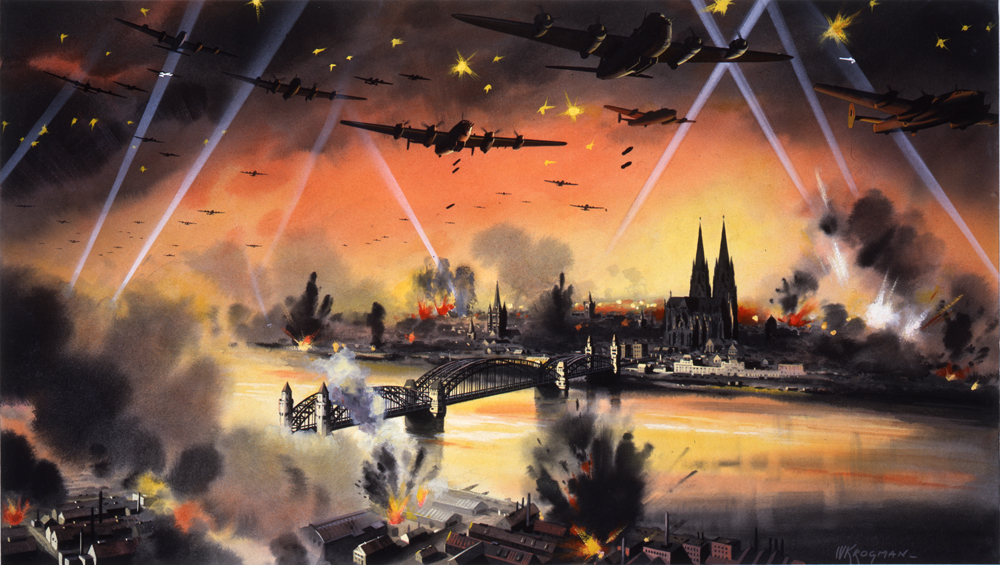
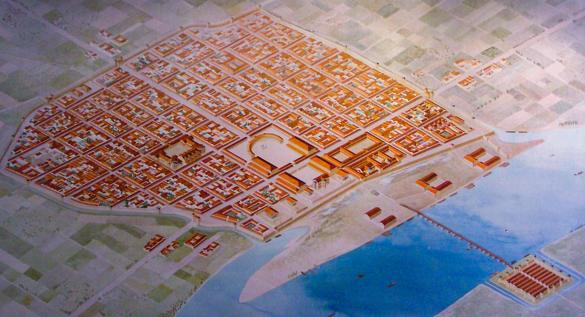
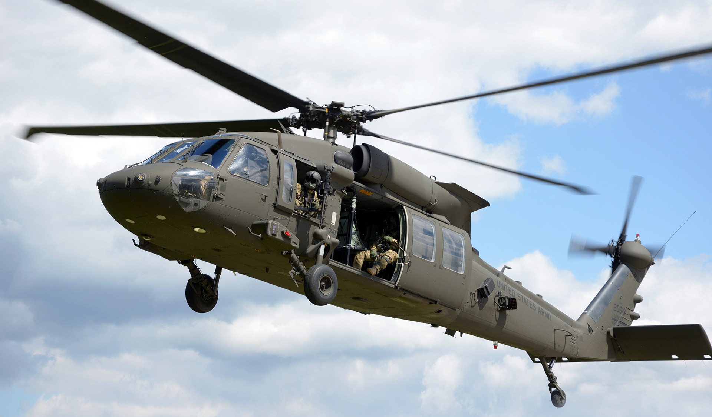
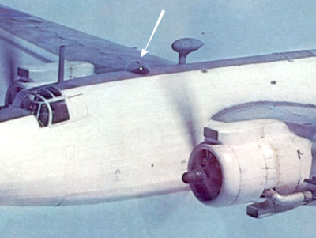
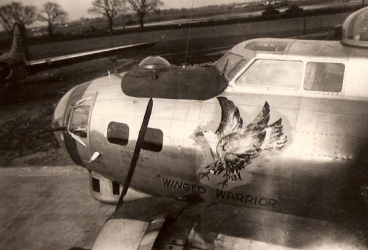
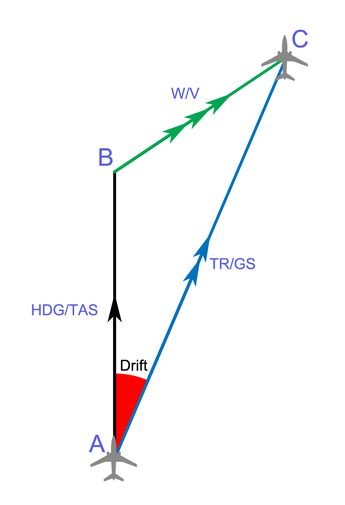
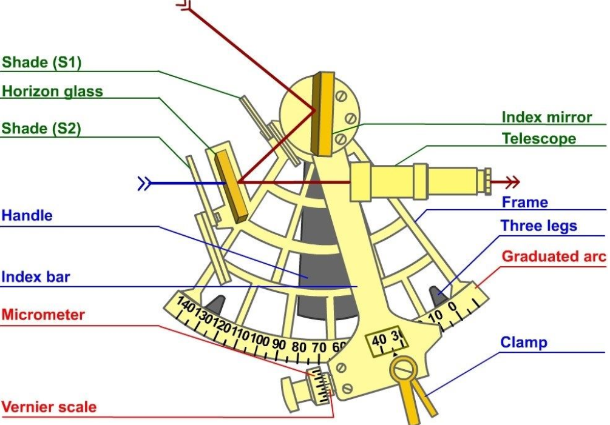
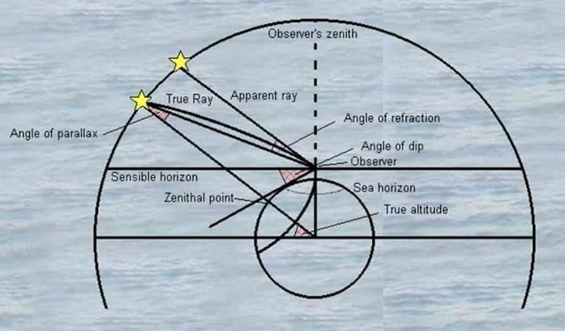

레이더 개발 이야기 (28) - 항법사가 되기 위한 길
게시: 2023-04-06T06:30:22+09:00
<Navigator는 알겠는데 observer는 대체 뭐하는 요원인가?> WW2 중간에 개발된 공대지 레이더 이야기를 하자면 먼저 항법사(navigator) 이야기를 먼저 시작해야 함. 1939년 로열 에어포스 폭격기 사령부 산하에는 총 280대의 폭격기가 존재. 그러나 WW2가 발발하면서 폭격기 사령부도 급격히 팽창하여 1942년 5월말 쾰른(Cologne) 야간 폭격 작전 한 번에 로열 에어포스는 한꺼번에 무려 1천대의 폭격기를 투입.

** 그림1은 영국의 쾰른 폭격을 기념하는 '공식' 그림. 참고로 쾰른(Köln)의 영어 이름은 프랑스식인 콜로뉴(Cologne). 지금은 라인 강변 동쪽까지 확장되었지만 원래 프랑스와 독일의 자연 경계인 라인 강의 서쪽에 위치한 도시로서, 원래는 게르마니아를 통치하던 로마의 근거지 노릇을 하던 병영 도시. 여기서 로마 황제 클라우디우스의 황후인 아그리피나(Agrippina)가 태어난 인연으로 Colonia Agrippina, 즉 '아그리피나의 식민도시'라고 불리다가 도시 이름에서 아그리피나까 떨어져 나가고 Cologne 또는 Köln이 된 것. 향수의 대명사인 오데코롱(eau de Cologne, 글자 그대로 콜로뉴의 물)도 결국 식민지인 colonia에서 나온 이름.

** 쾰른이 로마 식민 도시이던 대략 AD 50년의 모습을 상상화로 복원한 것.
조종사 양성에는 시간이 매우 오래 걸리는 법인데, 로열 에어포스든 루프트바페든 어떻게 단시간 안에 조종사들을 대량으로 훈련시킬 수 있었을까? 없었음. 그냥 속성으로 기본기만 가르쳐서 하늘에 띄웠음. 전투기 조종사는 타고난 동물적 감각(?)으로 어떻게 해볼 수도 있었을지는 모르겠는데, 영국 공군기지에서 바다를 건너 베를린까지 날아가 폭탄을 떨군 뒤 다시 자신의 기지를 찾아 돌아와 무사히 착륙시켜야 했던 폭격기 조종사는 무엇보다 길을 찾을 줄 알아야 했음. 그래서 폭격기에는 별도의 항법사를 태웠음. 그러나 아직 항공 전력의 중요성을 실감하지 못하던 WW2 직전까지 로열 에어포스에서는 항법사 육성에 대해 큰 필요성을 절감하지 못했음. 아예 항법사(Navigator)라는 요원 대신 그냥 폭격기에 관측사(Observer)라는 요원이 배정되는 경우가 많았는데, 이 명칭 자체가 당시 장거리 폭격기들이 어떻게 길을 찾았는지를 보여주는 대목. 아무 것도 없는 바다에서 단지 해와 별을 보고 길을 찾던, 즉 천문항법(그냥 줄여서 astro)을 구사하던 진짜 뱃사람 항해사와는 달리, 폭격기 조종사들은 그냥 대충 방향만 잡고 날다가 땅 위의 마을이나 목장, 강이나 산 등의 지형물을 지도와 대조해보고 항로를 정정하는 방식으로 길을 찾았던 것. 그러나 조종사가 조종하는 중에 저 아래 강과 마을의 위치를 지도와 대조해보는 것은 혼자서 하기는 좀 힘든 일. 그런 일을 해줄 사람이 하나 더 필요했고, 그래서 navigator가 아니라 observer라고 불렀던 것.

(용산에서 미군이 철수한 이후로는 잘 보이지 않지만, 예전에는 차를 타고 경부 고속도로를 가다보면 머리 위로 주한미군의 블랙호크 헬리콥터가 상당히 자주 지나가는 것을 볼 수 있음. 주로 대구에서 용산을 왔다갔다 하는 헬리콥터들이었는데, 이들이 고속도로 위에 바싹 붙어 가는 이유는? 당연히 길을 찾기 쉬워서임. 알고보면 헬리콥터 조종사 아저씨들도 길치 같음.)
어떻게 보면 그런 정도의 observer라면 크게 어려운 일을 하는 것 같지는 않아 보이는데, 실제로도 observer는 그다지 바쁜 보직이 아니었고 많은 경우 그냥 하는 일이 별로 없는 꿀보직. 실전에서는 아무 하는 일 없이 그냥 폭격기 등 위로 난 작은 반구형 관측창(astrodome)을 통해 적 전투기들의 움직임을 보며 '4시 방향 위쪽으로 적기가 다가온다' 등의 꼭 필요하지 않은 해설을 하며 방어기총수들을 지휘하는 역할을 하기도.
 
(윗 사진들이 원래 항법사가 별을 보고 길을 찾으라고 만들어둔 전용창인 astrodome. 그러나 실제로 저기서 별을 보고 폭격기 위치를 찾을 실력자의 수는 크게 부족.)
예외는 로열 에어포스 산하 연안방어 사령부 (Coastal Command). 이들은 아무 것도 없는 망망대해를 초계비행 해야 했으므로 진짜 뱃사람 못지 않은 항법 실력을 가지고 있어야 했고, 그래서 연안방어 사령부 산하 해양 초계기들에는 observer 대신 navigator들이 타고 있었음. 그러나 다른 나라들처럼 로열 에어포스도 성능이 떨어지는 해양 초계기보다는 속도도 빠르고 폭장량이 큰 폭격기 편대를 훨씬 중요시했으므로, 그런 navigator들의 중요성은 상대적으로 경시되는 편이었음.
<나보고 Astro를 배우라고? 차라리 승진 안 하고 말지!> WW2 이전에는 그 정도면 충분했으므로 사령부에서도 항법사들의 훈련을 그다지 닥달을 하지도 않았음. 가령 WW2 직전인 1939년 로열 에어포스의 observer 훈련은 민간 항공 항법 학교(Civilian Air Navigation School)에서 3개월 과정을 거치는 것부터 시작했는데, 그 교관들은 모두 민간인들로서 일부는 조종사였지만 상당수는 진짜 뱃사람 항해사. 그만큼 군에는 항법을 아는 사람도 없었고, 아예 군이고 민간이고 항공 분야에는 천문항법(astro)을 아는 사람이 드물었기 때문. 그래서 observer가 3개월간 배우는 과목은 지도 읽는 방법, 지구 자기장과 나침반, 계기 읽는 방법, 신호 통신법, 기상학, 추측항법(dead reckoning) 등이었고 천문항법은 처음부터 아예 들어가 있지도 않았음. Observer는 기본적으로 부사관 계급이 맡는 보직인데, 그 정도 계급에게 천문항법은 너무 어렵다고 판단했던 것.

(추측항법(dead reckoning)도 원래 진짜 선박 항해에서 나온 용어로서, 폭풍이나 짙은 구름으로 인해 천문항법을 위한 별과 해를 볼 방법이 없을 때는 그냥 배의 속도와 나침반으로 확인한 배의 방향만으로 선박이 마지막으로 확인된 위치로부터 지금은 어디쯤 와있다는 것을 추측하는 것. 따라서 속도와 방향만 알면 대충은 맞출 수 있음. 실제로 폭격기들은 전투기와는 달리 제멋대로 방향을 바꾸지도 않고 속도도 일정하게 미리 정해진 코스를 따라 날았음. 문제는 측풍(drift) 등으로 추측한 것보다 엉뚱한 곳에 있는 경우가 많다는 것이 문제.)
실제로 나침반과 육분의(sextant)를 가지고 해와 별의 위치를 재어 자신의 위치를 파악하는 천문항법은 원래 배우는 것이 상당히 어려운 기법. 현대 미해군사관학교에서도 (공학 부분을 제외하고는) 가장 어려운 학문이었기 때문에 결국 정규 교과에서 빠졌을 정도. 로열 에어포스 사람들이 특별히 머리가 나빠서 못 배운 것은 아니고, 로열 에어포스에서도 천문항법으로 폭격기의 현 위치를 찾을 줄 아는 사람들이 꽤 있었음. 그러나 그런 인원은 로열 에어포스의 전체 폭격기 사령부에서도 50명을 넘지 않는 수준이었기 때문에 진짜 폭격 편대가 출동할 때 편대마다 1~2명씩이 탑승하여 전체 편대를 인도하는 수준. 그러니 재수가 없어서 하필 그런 숙련된 항법사가 탄 폭격기가 격추된다면 목표지점까지 찾아가거나 혹은 기지로 되돌아갈 길을 찾는 것이 막막해지는 수준.

(항해용 육분의. 항공기용은 좀 더 간단했지만 기본적으로는 같은 구조. 생각보다 매우 복잡.)

(천문항법을 익히려면 배워야 하는 것들. 어떻게 보면 간단한 것도 같지만 아무튼 매우 복잡해 보임.)
WW2가 시작되고나서 루르(Ruhr) 공업지대까지 날아가 폭격을 할 필요가 생겨나면서, 특히 무섭기 짝이 없는 루프트바페 요격기들을 피해 야간 폭격을 수행하면서부터 실력있는 항법사의 필요성이 절실해졌고, 기존의 observer들은 모두 장교인 navigator로 전환 및 승진 되었는데 이 조치에 모두가 행복한 것은 아니었음. 특히 navigator들에게 천문항법의 교육이 필요하다고 강조되면서 더욱 그러했음. 실제로 평생을 그런 천문항법으로 밥벌이를 하는 진짜 항해사들도 실수를 꽤 많이 하는 법인데, 삼각함수를 속성으로 배운 navigator들이 비좁고 춥고 어둡고 진동과 소음이 심한 폭격기 한쪽 구석에서 별의 위치를 찾고 각도를 재고 지도에 컴퍼스로 뭔가를 그리고 계산하는 등의 일을 하는 것은 매우 실수가 잦을 수 밖에 없는 법.

(아스트로돔은 생각보다 사이즈가 매우 작음.)
그러나 이렇게 솜씨있는 항법사 부족으로 인한 어려움을 먼저 겪었던 것은 로열 에어포스가 아니었음. 적어도 WW2 초기 로열 에어포스는 지키는 입장이라서 장거리 항법 능력이 대량으로 절실했던 것은 아님. 그러나 독일 공군 루프트바페는 독일 및 프랑스의 기지에서 영국까지 바다를 건너 폭격해야 했고, 로열 에어포스의 레이더를 이용한 효율적인 요격을 피해 이들도 야간 폭격을 했기 때문에 솜씨있는 항법사가 많이 필요했음. 독일인들은 영국인보다 수학에 뛰어났을까? 그럴 리가. 루프트바페도 로열 에어포스와 똑같은 문제에 봉착. 그런데 여기서 독일인들은 솔루션을 찾아냈음. 그 이야기는 다음 번에.
** 참고 : WW2 초기 폭격기들이 일상적으로 사용했던 가장 진보된 장비는 drift meter (측풍 측정기) 정도였다고. 이에 대해서는 전에 올렸던 아래 포스팅을 참조.
https://nasica1.tistory.com/404
항공모함은 대체 어디에 (2) - 영화 '생존자들'의 재미있는 기술적 배경
제2차 세계대전 당시에 연합군은 전파 기지국을 운용하여 군용기의 항법 계산에 활용했습니다. 그 자세한 이야기는 다음 주에 하는 것으로 하겠습니다만, 적의 공격에 항상 노출되는 군용기의
nasica1.tistory.com